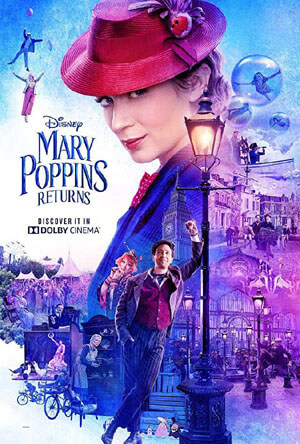

Mary Poppins Returns
Language: English
Release Date: Nov 29 ,2019
(Dolby Theatre)Release Date: Dec 19 ,2019
(United States)Release Date: Jan 04 ,2019
(India)Genre: Musical,Fantasy
 7.5/10
7.5/10 7.3/10
7.3/10 78%
78% 65/100
65/100 4/5
4/5 8/10
8/10 3/5
3/5 2.5/5
2.5/5 2/5
2/5
 Book Now
Book Now Book Now
Book Now Book Now
Book Now Book Now
Book Now Book Now
Book Now Book Now
Book Now
Download/Listen To All Songs
 Listen Now
Listen Now Listen Now
Listen Now
Official Social Media Accounts
 Connect Now
Connect Now
Official Website
Similar Movie(s)

Description
Cast: Emily Blunt, Lin-Manuel Miranda, Ben Whishaw, Emily Mortimer, Julie Walters, Dick Van Dyke, Angela Lansbury, Colin Firth, Meryl Streep
Director: Rob Marshall
Based On: Mary Poppins by P. L. Travers
Plot
Decades after her original visit, the magical nanny returns to help the Banks siblings and Michael's children through a difficult time in their lives.IMDB
As Mary Poppins returns, here are 10 facts about the originalBy:The Indian Express - 04 January,2019 Mary Poppins Returns review: Emily Blunt starrer is more stodgy than spryBy:The Indian Express - 04 January,2019 Mary Poppins Returns Movie Review: Disney Brings Back Mary Poppins, Magic and AllBy:News18 - 04 January,2019 ‘Bumblebee’, ‘Mary Poppins Returns’ try to make up for absence of local releasesBy:Livemint - 04 January,2019 Mary Poppins Returns movie review: Emily Blunt gets overpowered by Disney's nostalgic obsessionsBy:Firstpost - 04 January,2019 Mary Poppins Returns movie review: A spoonful of Emily Blunt makes the mediocrity go downBy:Hindustan Times - 04 January,2019 'Aquaman' Leads Year-End Openers as 'Mary Poppins Returns' SoarsBy:IndieWire - 31 December,2018 A Pakistani Theater Is Using A Marvel Gag to Help Advertise Mary Poppins ReturnsBy:Gizmodo - 31 December,2018 ‘Aquaman’ Keeps Its Box-Office Lead as ‘Mary Poppins’ Gets a Holiday BoostBy:New York Times - 31 December,2018 Box Office: 'Mary Poppins' Jumps 19%, 'Bumblebee' Falls 5%, 'Spider-Man' Tops $200M GlobalBy:Forbes - 30 December,2018 Aquaman Swims Into Weekend Box Office Win. Mary Poppins Returns Comes in SecondBy:TIME - 30 December,2018 Mary Poppins Returns Is The Force Awakens Again (But Better)By:Screen Rant - 30 December,2018 The Challenge of Playing Mary PoppinsBy:Hollywood Reporter - 28 December,2018Reviews and News



Mary Poppins Returns
Videos
Trailer
TeaserMore Videos